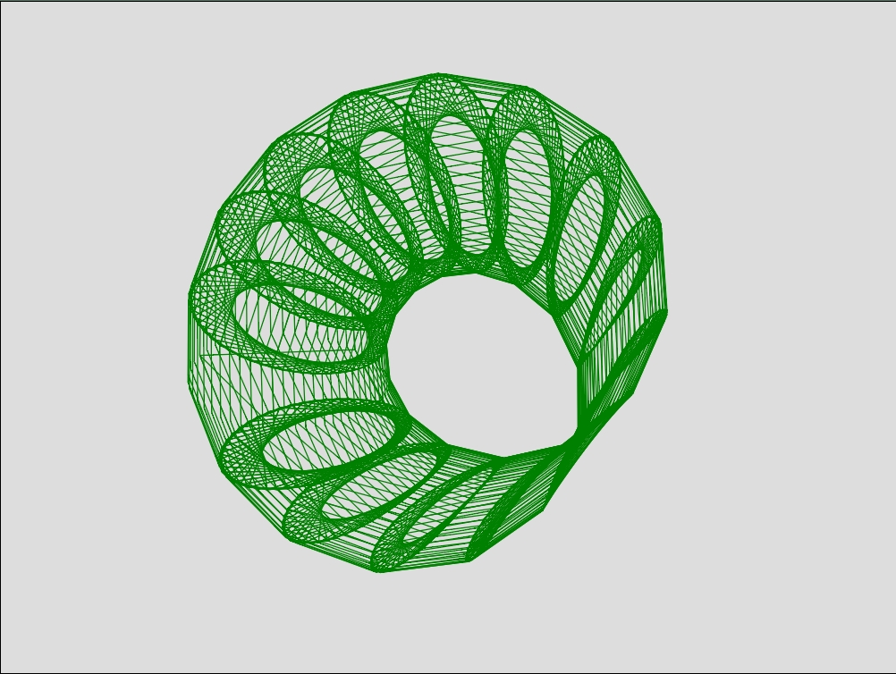
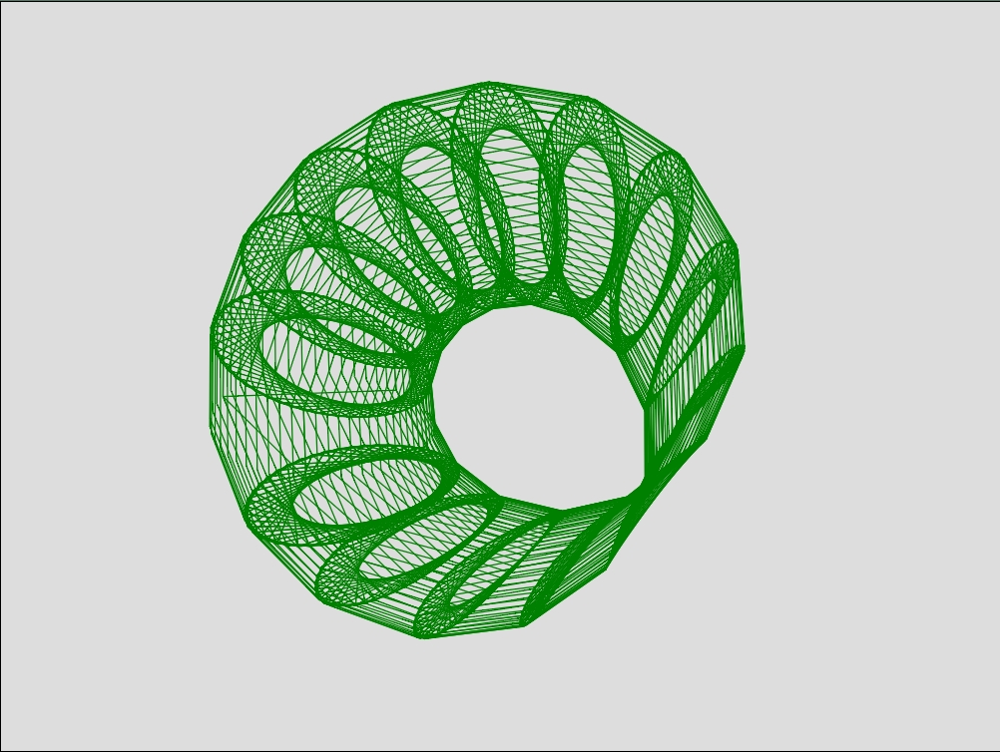
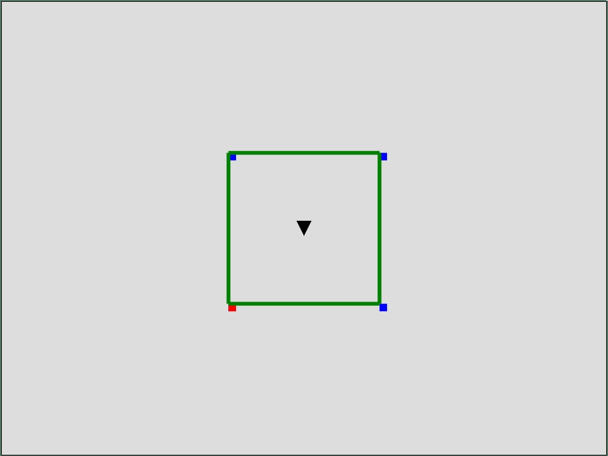
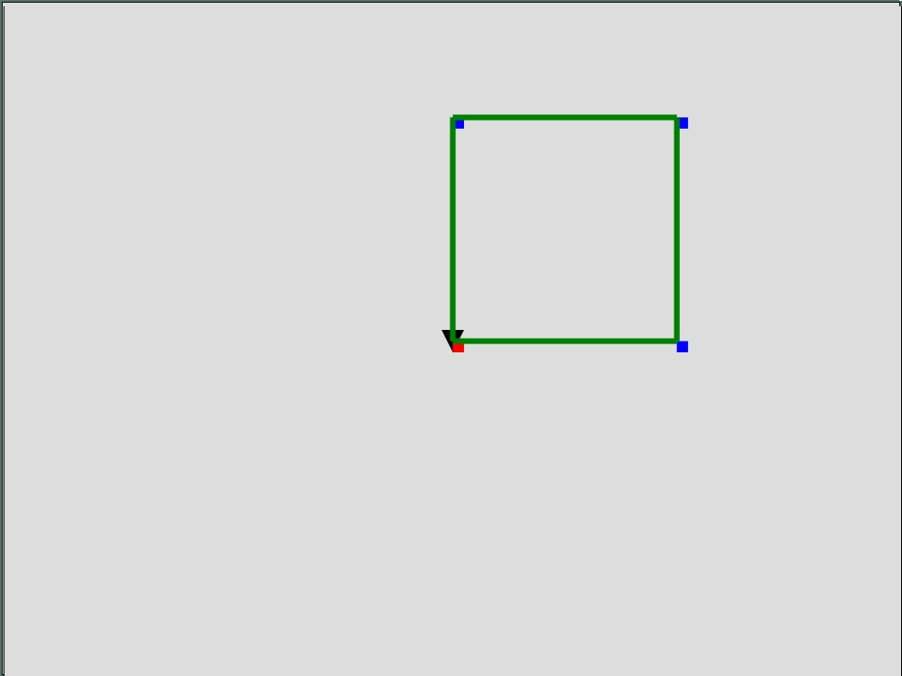
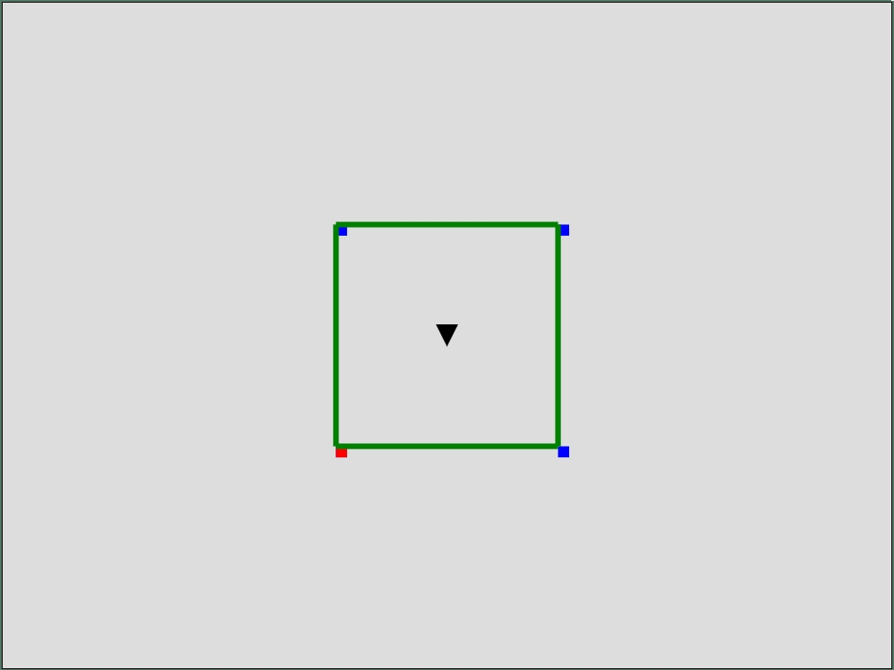
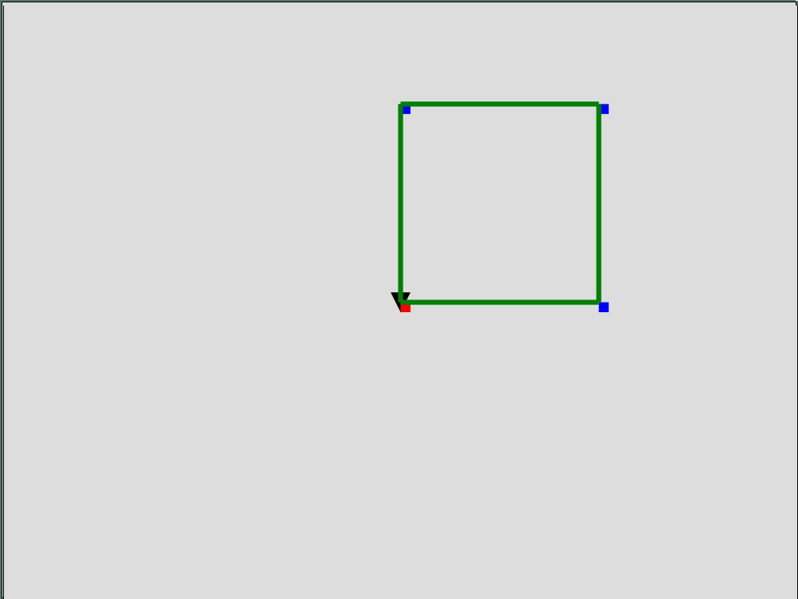

Что такое 4D?
Четырехмерное пространство (не путать с четырехмерным пространственно-временным континиумом) -
это пространство, обладающее четырьмя величинами: длинной, шириной, высотой и густотой. При
этом, густота - это величина, а не консистенция.
Положение каждой точки четырехмерного пространства в координатах задается четырьмя значениями.
Рассмотрим для начала 0-мерное пространство:
Нольмерное пространство - это точка. Оно способно содержать в себе лишь один тип фигуры - точку.
Точка не обладает размером, так, как в 0-мерном пространстве нет величин - ни длинны,
ни ширины, ни высоты. В нольмерном пространстве нет сторон, в которые можно двигаться. Так же, в
нольмерном пространстве невозможно вращение.
Если добавить 1 пространственную величину, то получится одномерное пространство, которое может
содержать в себе 2 типа фигур - точку и линию. В одномерном пространстве есть длинна, которой
может обладать линия, появляется так же и понятие размера. Линия состоит из бесконечного
количества точек, обладающих нулевой длинной перенесенных в одномерном пространстве на
определенное расстояние друг от дрга.
Однако для обозначения границ линий достаточно 2 точки - точка начала линии и точка конца. В
одномерном пространстве появляется возможность движения, однако еще нет возможности вращения.
Направление движения - вперед/назад.
Если добавить еще одну пространственную величину, получится двухмерное пространство, обладающее
2-мя величинами - длинной и высотой. В двухмерном пространстве впервые появляется
понятие угла и перпендикулярности. Помимо точек и линий, двухмерное пространство может содержать
в себе плосости. Квадрат, изображенный на рисунке выше, образуется в результате
паралельного переноса линий в высоту. При этом закрашенный квадрат состоит из бесконечного числа
таких линий, обладающих нулевой высотой, или длинной, но для обозначения границ квадрата,
достаточно 4 линии и 4 точки.
Появляется возможность вращения в одну сторону. При этом вращение происходит вокруг точки.
Направление движения в двухмерном пространстве - вперед/назад и вверх/вниз.
Если добавить еще одну пространственную величину - ширину, получится трехмерное пространство, в
котором 3 линии могут быть одновременно перпендикулярны друг другу. Трехмерное пространство
содержит в себе точки, линии, плоскости и объемы. Куб, изображенный на рисунке, образован
паралельным переносом квадратов в третью сторону, соответственно в кубе бесконечное множество
квадратов,
обладающих нулевой длинной, или шириной, или высотой, но для обозначения его границ,
используются 6 квадратов. При взгляде на квадрат под прямым углом, он кажется, словно маленький
квадрат находится внутри большого, и они соеденены линиями.
На самом деле данная иллюзия возникает в результате перспективы, и все эти квадраты одинакового
размера, что становится видно при повороте куба. Двухмерную фигуру в трехмерном пространстве
можно повернуть так, что при прямом взгляде
она будет выглядеть, как линия. Одномерную линию, в свою очередь в трехмерном пространстве можно
повернуть так, что она будет выглядеть, как точка. В трехмерном пространстве вращение возможно в
3 стороны. При этом вращение возможно вокруг линии.
Направление движения в трехмерном пространстве - вперед/назад, вверх/вниз и вправо/влево. У
трехмерных фигур есть 6 сторон.
Если добавить еще одну пространственную величину - густоту, получится четырехмерное
пространство, в котором 4 линии могут быть одновременно перпендикулярны друг другу.
Четырехмерное пространство
содержит в себе точки, линии, плоскости, объемы и четырехмерные гиперобъемы. Тессеракт,
изображенный на рисунке, образован паралельным переносом кубов в четвертую сторону,
соответственно в тессеракте бесконечное множество кубов,
обладающих нулевой длинной, или шириной, или высотой, или густотой. При взгляде на тессеракт,
вращающийся в 3-х направлениях, кажется, словно маленький куб находится внутри большого, и они
соеденены линиями.
На самом деле данная иллюзия возникает в результате перспективы, и все эти кубы одинакового
размера, что становится видно при повороте тессеракта в дополнительную сторону. Трехмерную
фигуру в четырехмерном пространстве можно вращать так, что она будет выглядеть, как плоскость, и
повернуть так, что при прямом взгляде она будет выглядеть, как линия. Двухмерную фигуру и
одномерную линию, в свою очередь в четырехмерном пространстве можно повернуть так, что она будет
выглядеть,
как точка. В четырехмерном пространстве вращение возможно в 6 сторон. При этом вращение возможно
вокруг плоскости. Направление движения в четырехмерном пространстве - вперед/назад, вверх/вниз,
вправо/влево и ана/ката. У четырехмерных фигур есть 12 сторон.
Фигуры
2D Круг
Границы 2D Круга описываются траекторией движения точки
на плоскости вокруг центра. По этой
траэктории можно разместить бесконечно много точек,
но расстояние от этих точек до центра
всегда будет одинаковым.
Круг является замкнутой фигурой, и у него нет углов.
2D Треугольник
Треугольник образован на плоскости, в которой находятся
3 точки, которые соеденены между
собой. У треугольника, исходя из названия, есть 3 угла.
2D Пятиугольник
Пятиугольник образован на плоскости, в которой
находятся 5 точек, которые соеденены между
собой. У пятиугольника, исходя из названия, есть 5 углов.
2D Шестигольник
Шестиугольник образован на плоскости, в которой находятся
6 точек, которые соеденены между
собой. У шестиугольника, исходя из названия, есть 6 углов.
3D Конус
Конус является трехмерной фигурой, образованной
соединением границ двухмерного круга с
точкой, которая по 2-м измерениям совпадает с центром
круга, а по третьему
измерению, эта точка перенесена в сторону.
Из за этого при взляде снизу, конус выглядит, как
круг, точки которого соеденены с центром:
3D Цилиндр
Цилиндр является трехмерной фигурой, образованной
соединением границ двухмерного круга с
границами такого же круга, который по 2-м измерениям
совпадает с первым, а по третьему
измерению, этот круг перенесен в сторону. Из за этого
при взляде снизу, с учетом
перспективы, цилиндр выглядит, как маленький круг, внутри
большого, которые соеденены между
собой линиями:
3D Октаэдр
Правильный октаэдр является трехмерной фигурой, как и куб,
выглядит одинаково при прямом
взгляде со всех сторон. Образован соединением крайних точек
квадрата с двумя точками,
расположенными в двух измерениях по центру квадрата, а
втретьем измерении, разведенных в
противоположные стороны.
3D Пирамида
Пирамида является трехмерной фигурой, образованной
соединением границ двухмерного квадрата с
точкой, расположенной по двум измерениям по центру
квадрата,
а по третьему, отведена в сторону. Пирамида состоит
из плоскостей квадрата и треугольников,
имеющих общие ребра.
При взляде снизу, пирамида выглядит, как квадрат,
крайние точки которого, соеденены с
центром:
3D Симплекс
Симплекс является трехмерной фигурой, образованной
соединением границ двухмерного
треугольника с точкой, расположенной по двум измерениям,
внутри границ треугольника,
а по третьему измерению, отведенной в сторону. Симплекс
состоит из треугольников.
При взляде снизу, симплекс выглядит, как треугольник,
крайние точки которого, соеденены с
центром:
3D Сфера
Сфера является трехмерной фигурой, состоящей из соединенных
последовательно двухмерных
кругов, которые повернуты в третьем измерении вокруг общей
оси, так, что у каждого
следующего круга, угол поворота больше на определенное
значение, чем у предидущего. Ось
проходит через середину всех кругов, и разделяет
эти круги пополам. При повороте в любую сторону и при
взгляде под любым углом сфера выглядит
одинаково.
3D Тор
Тор является трехмерной фигурой, состоящей из соединенных
последовательно двухмерных кругов,
которые повернуты в третьем измерении вокруг линии
так, что у каждого
следующего круга, угол поворота больше на определенное
значение, чем у предидущего, но в
отличии от
сферы, круги отведены от этой линии на определенное
расстоение. При взгляде спереди или
сзади, тор выглядит, как бублик. С остальных сторон,
тор выглядит вот так:
3D Гексатрион
Гексатрион - многогранник, образованный двумя шестиугольниками,
находящимися в двух
измерениях в одном и том же месте, но разведенных по третьему
измерению так, что они
паралельны
друг другу. Эти 2 шестиугольника соеденены между собой. Так же,
каждый шестиугольник,
соедененен с точкой, расположенной еще дальше от
противоположного шестиугольника, чем
данный.
Снизу гексатрион выглядит так:
3D Икосаэдр
Икосаэдр подобен гесатриону, с той лишь разницей, что
шестиугольники на плоскости развернуты
под углом относительно друг друга, поэтому
снизу икосаэдр выглядит так:
3D Ромбиноус
 Ромбиноус является трехмерным подобием четырехмерного
24-ячейника. Фигура полностью
симметрична, и при прямом взляде с любой стороны выглядит
одинаково. При взгляде с некоторых
ракурсов, ромбиноус может в 3-х измерениях напоминать
четырехмерный тессеракт. К примеру
снизу изображен не тессеракт, а ромбиноус
под углами xz: -138, yz: -145:
4D 24-ячейник
24-ячейник - четырехмерная фигура, образованная в результате
расположение на определенном
растоянии от центра каждой грани тессеракта точки, с которой
соединяются точки тессеракта.
24-ячейник
выглядит одинаково при прямом взгляде со всех 12 сторон
четырехмерного пространства. Эта
фигура способна полностью замостить четырехмерное
пространство подобно тому, как можно
замостить трехмерное пространство кубами,
или то же четырехмерное пространство тессерактами.
4D Тор Клиффорда
Тор клиффорда является примером квадратного полностью
симметричного тора. Он образован в
результате вращения квадрата вокруг своего центра в
двухмерном пространстве. Полученная
фигура при
вращении в четырехмерном прострастве образует тор
Клиффорда. Одним из его свойств является
то, что фигура бублика образуется не только при взгляде
на него спереди или сзади, но и с
некоторых
других ракурсов. Если развернуть тор клиффорда в 3-х
измерениях, получим следующий вид:
Если с данного угла обзора вращать тор Клиффорда в сторону
yz, то он будет вращаться подобно
бочке. Но если с данного ракурса вращать его в сторону
yw то он примет форму бублика, чего
не происходит
с другими видами торов в четырехмерном прострастве. Тор
Клиффорда при взгляде под углами
+/-90 xz и yw или +/-90 yz и xw принимает следующий вид:
Еще одной особенностью тора Клиффорда является то, что
несмотря на его видимый объем как в
третьем, так и в четвертом измерении, он в какой-то
мере является плоским тором,
что можно увидеть при взгляде под определенным углом:

4D Конкрон
Конкрон является четырехмерной фигурой, напоминающей конус
в трех измерениях, а при повороте
в четвертом измерении становится видно, что он образован
двумя, расположенными
паралельно друг другу конусами, и цилиндром в основании,
что изображено на следующем
рисунке:
4D Конет
Конет - четырехмерный аналог конуса со сферой в основании.
При вращении в трех измерениях,
он выглядит, как сфера. При повороте в четвертом измерении,
он выглядит, как конус:
4D Копирон
Копирон являтся одним из вариантов четырехмерной
пирамиды, состоящей из 3D конусов, с
цилиндром в основании. При вращении в трех измерениях,
он выглядит, как конус. При повороте
в четвертом
измерении, он принимает следующий вид:
4D Кубиндр
Кубиндр - четырехмерный куб, построенный из трехмерных
цилиндров. В идеальном случае, все
стороны кубиндра равны, но на изображениях он несколько
вытянут. При вращении в трех
измерениях
кубиндр напоминает цилиндр. При вращении же в четвертом
измерении, он принимает вид куба,
что видно на следующем рисунке:
4D Теторк
Теторк хоть и напоминает тор, не является четырехмерным
тором в полном смысле этого слова,
хотя при вращении в трех измерениях, он полностью
соответствует тору, в четвертом измерении
он
образован паралельным переносом второго тора, с
последующим соединением. Из-за чего
принимает следующий вид:
4D Лутриум
Лутриум - четырехмерная петля, образованная из квадратов,
у каждого из которых одновременно
постепенно увеличивается значение углов xy и zw.
4D Тегиплекс
Тегиплекс - четырехмерный аналог симплекса, построенный
из симплексов.
4D Телиндр
Ромбиноус является трехмерным подобием четырехмерного
24-ячейника. Фигура полностью
симметрична, и при прямом взляде с любой стороны выглядит
одинаково. При взгляде с некоторых
ракурсов, ромбиноус может в 3-х измерениях напоминать
четырехмерный тессеракт. К примеру
снизу изображен не тессеракт, а ромбиноус
под углами xz: -138, yz: -145:
4D 24-ячейник
24-ячейник - четырехмерная фигура, образованная в результате
расположение на определенном
растоянии от центра каждой грани тессеракта точки, с которой
соединяются точки тессеракта.
24-ячейник
выглядит одинаково при прямом взгляде со всех 12 сторон
четырехмерного пространства. Эта
фигура способна полностью замостить четырехмерное
пространство подобно тому, как можно
замостить трехмерное пространство кубами,
или то же четырехмерное пространство тессерактами.
4D Тор Клиффорда
Тор клиффорда является примером квадратного полностью
симметричного тора. Он образован в
результате вращения квадрата вокруг своего центра в
двухмерном пространстве. Полученная
фигура при
вращении в четырехмерном прострастве образует тор
Клиффорда. Одним из его свойств является
то, что фигура бублика образуется не только при взгляде
на него спереди или сзади, но и с
некоторых
других ракурсов. Если развернуть тор клиффорда в 3-х
измерениях, получим следующий вид:
Если с данного угла обзора вращать тор Клиффорда в сторону
yz, то он будет вращаться подобно
бочке. Но если с данного ракурса вращать его в сторону
yw то он примет форму бублика, чего
не происходит
с другими видами торов в четырехмерном прострастве. Тор
Клиффорда при взгляде под углами
+/-90 xz и yw или +/-90 yz и xw принимает следующий вид:
Еще одной особенностью тора Клиффорда является то, что
несмотря на его видимый объем как в
третьем, так и в четвертом измерении, он в какой-то
мере является плоским тором,
что можно увидеть при взгляде под определенным углом:

4D Конкрон
Конкрон является четырехмерной фигурой, напоминающей конус
в трех измерениях, а при повороте
в четвертом измерении становится видно, что он образован
двумя, расположенными
паралельно друг другу конусами, и цилиндром в основании,
что изображено на следующем
рисунке:
4D Конет
Конет - четырехмерный аналог конуса со сферой в основании.
При вращении в трех измерениях,
он выглядит, как сфера. При повороте в четвертом измерении,
он выглядит, как конус:
4D Копирон
Копирон являтся одним из вариантов четырехмерной
пирамиды, состоящей из 3D конусов, с
цилиндром в основании. При вращении в трех измерениях,
он выглядит, как конус. При повороте
в четвертом
измерении, он принимает следующий вид:
4D Кубиндр
Кубиндр - четырехмерный куб, построенный из трехмерных
цилиндров. В идеальном случае, все
стороны кубиндра равны, но на изображениях он несколько
вытянут. При вращении в трех
измерениях
кубиндр напоминает цилиндр. При вращении же в четвертом
измерении, он принимает вид куба,
что видно на следующем рисунке:
4D Теторк
Теторк хоть и напоминает тор, не является четырехмерным
тором в полном смысле этого слова,
хотя при вращении в трех измерениях, он полностью
соответствует тору, в четвертом измерении
он
образован паралельным переносом второго тора, с
последующим соединением. Из-за чего
принимает следующий вид:
4D Лутриум
Лутриум - четырехмерная петля, образованная из квадратов,
у каждого из которых одновременно
постепенно увеличивается значение углов xy и zw.
4D Тегиплекс
Тегиплекс - четырехмерный аналог симплекса, построенный
из симплексов.
4D Телиндр
 Телиндр - четырехмерный аналог цилиндра со сферами в основаниях. При вращении в трех
измерениях он напоминает сферу. При повороте в четвертом измерении, он принимает вид
цилиндра:
4D Тетоктаэр
Тетоктаэдр - четырехмерный аналог октаэдра, построенный из октаэдров. При прямом взгляде со
всех 12 сторон четырехмерного пространства выглядит одинаково.
4D Тетрамида
Тетрамида - четырехмерный аналог пирамиды с кубом в основании. При взгляде с определенных
ракурсов принимает вид куба:
4D Тетрасфера
Тетрасфера - четырехмерный аналог сферы, построенная из трехмерных сфер. Со всех 12 сторон
четырехмерного пространства выглядит, как объемная сфера.
4D Катор
Катор - еще один вариант тора в четырехмерном прострастве. Он полностью соответствует своему
трехмерному аналогу, с единственной разницей, заключающейся в том, что он построен не из
2D кругов, а из 3D сфер.
4D Гексатетрон
Телиндр - четырехмерный аналог цилиндра со сферами в основаниях. При вращении в трех
измерениях он напоминает сферу. При повороте в четвертом измерении, он принимает вид
цилиндра:
4D Тетоктаэр
Тетоктаэдр - четырехмерный аналог октаэдра, построенный из октаэдров. При прямом взгляде со
всех 12 сторон четырехмерного пространства выглядит одинаково.
4D Тетрамида
Тетрамида - четырехмерный аналог пирамиды с кубом в основании. При взгляде с определенных
ракурсов принимает вид куба:
4D Тетрасфера
Тетрасфера - четырехмерный аналог сферы, построенная из трехмерных сфер. Со всех 12 сторон
четырехмерного пространства выглядит, как объемная сфера.
4D Катор
Катор - еще один вариант тора в четырехмерном прострастве. Он полностью соответствует своему
трехмерному аналогу, с единственной разницей, заключающейся в том, что он построен не из
2D кругов, а из 3D сфер.
4D Гексатетрон
Гексатетрон - четырехмерный аналог гексатриона.
Интерфейс
Интерфейс рабочей части страницы условно можно поделить на 3 части. В верхней части находятся
кнопки "Файл", "Настройки", и выбор стороны обзора:
Если нажать на кнопку "Файл", то появится возможность сохранить результат в отдельный файл с
раширением "4do". Потом можно открыть файл с данным расширением. Если файл не открывается,
попробуйте перезагрузить страницу. По умолчанию, открываемый файл догружается и на сцену будет
догружена новая фигура, которая отобразится вместе с той, которая была на сцене до открытия
файла. Если вы хотите очистить сцену, чтоб отображалась только фигура из файла или чтоб
открылась только фигура из меню стандартных фигур, нажмите кнопку "Новый". Если во время работы
вы
сделали что-то не так, можно вернуть предидущий результат, нажав кнопку "Назад", или опять
отобразить текущий результат, нажав кнопку "Вперед". В поле "Имя" можно дать название файлу
перед
сохранением, или же дать название группе выделенных линий, после чего нажать на кнопку "Сделать
группу". После нажатия данной кнопки, можно будет выбрать группу линий по клику. Создавать можно
несколько разных групп.
Нажав на кнопку "Настройки", можно настраивать толщину линий, скорость
вращения/перемещения/масштабирования фигуры, отображение точек, линий и центра осей. Фигуры
выглядят более красиво,
если у них настроить тонкие линии без отображения точек, но работать проще с толстыми линиями.
Настройка скорости вращения/перемещения/масштабирования фигуры работает в обратном направлении,
то есть, чем меньше значение ползунка, тем выше скорость.
ОБРАТИТЕ ВНИМАНИЕ, ЧТО КОГДА ОТКРЫТО МЕНЮ НАСТРОЕК, НЕЛЬЗЯ ВЫДЕЛЯТЬ ТОЧКИ, ЛИНИИ И ГРУППЫ!
Ниже находятся кнопки, позволящие сменить вид на любую из 12 сторон 4-го измерения.
Посередине рабочего пространства находится окно сцены, которое отображает фигуры. В данном окне
так же отображается поворот фигур, их масштабирование и перемещение.
 Ниже находится секция в которой можно выбрать режим вращения, режим отображения, кнопка
вариантов выбора и модификаторы.
Поставив галочку возле "Только объект", вращение, перемещение и масштабирование будет
происходить относительно всей сцены, даже в режиме выделения.
Перед панелями ниже есть возможность выбора в какую сторону будет происходить
вращение/перемещение/масштабирование, для этого надо отметить "+" или "-". В полях
далее отображаются углы поворота или значение перемещения или во сколько раз масштабировать. Так
же можно вручную впечатать нужное значение, и нажать кнопку "Ок", после чего
фигура трансформируется на указанное значение. В режиме выбора точек, если выбрана одна точка, в
данных полях можно отобразить точные координаты точки, если нажать "Старт", так же
можно установить точные координаты точки вручную набрав значения и нажав кнопку "Ок". Кнопка
ниже может изменять тип трансформирования с поворота на перемещение, и масштабирования. Нажимая
на
данную кнопку, последовательно поменяется вариант трансформаций. После этой кнопки идут флажки
выбора сторон или углов, которые нужно трансформировать. Отметив их, и нажав кнопку "Старт",
фигура или сцена начнет вращаться, или перемещаться или менять масштаб. Чтоб прекратить
трансформацию, нажмите кнопку "Стоп". После кнопки "Старт/Стоп" расположен флажек перспективы.
Если он отмечен, фигуры на сцене будут отображены в перспективном виде, если убрать отметку, то
в ортографическом.
Нажав на кнопку "Фигуры", можно будет выбрать от 0-мерных до 4-х мерных фигур, список которых
появится по нажатию на соответствующую кнопку. Нажав на кнопку "Выделить", можно перейти в режим
выделения точек, линий, всех фигур или отдельных групп, нажав на соответствующую кнопку.
Выбирать можно двумя способами - кликом по нужной части фигуры, которую надо выделить (отмечено
"Кликом"),
или зажав левую кнопку мыши и наведя курсор на нужную часть фигуры (нужно отметить "Наведение
курсора"). В режиме выбора групп, если отмечен флажек "Центрировать", то центр сцены будет
располагаться
по центру выбранной группы.
Модификаторы
Список модификитаров отличается в разных режимах выделения. Если включен режим выделения вершин,
доступны одни модификаторы, в режиме выделения ребер - другие, в режиме выделения всех фигур -
доступны те, которые не доступны в других режимах.
Соеденить
Модификатор "Соеденить" работает в режиме выделения точек, ребер и всего. Данный модификатор
соединяет выделенные точки или линии новыми линиями. Его лучше не использовать для
соединения
более, чем двух точек или линий, так как тогда он может не правильно соединить.
Дубликат
Модификатор "Дубликат" работает в режиме выделения точек. Данный модификатор вставляет
дополнительные точки на место выделенных точек с последующим соединением копий с оригиналом
новыми линиями.
После дублирования точек, их можно переместить в нужное место.
Центр осей


Модификатор "Центр осей" работает в режиме выделения точек, линий и всего. Данный
модификатор делает выделенные фрагменты центром вращения.
Собрать
Модификатор "Собрать" работает в режиме выделения точек. Он объединяет выделенные точки в
одну точку.
Пересчитать
Данный модификатор пересчитывает геометрию. Дело в том, что, после вращения отдельных частей
фигур, или после применения модификатора "Вращение", у точек фигур оказывается разная
направленность
в пространстве, из-за чего дальнейшая работа с фигурой может привести к ошибкам. Чтоб
сделать направленность одинаковой у всех точек в пространстве, применяйте модификатор
"Пересчитать", который
всегда доступен даже вне режима выделения.
Удалить
Ниже находится секция в которой можно выбрать режим вращения, режим отображения, кнопка
вариантов выбора и модификаторы.
Поставив галочку возле "Только объект", вращение, перемещение и масштабирование будет
происходить относительно всей сцены, даже в режиме выделения.
Перед панелями ниже есть возможность выбора в какую сторону будет происходить
вращение/перемещение/масштабирование, для этого надо отметить "+" или "-". В полях
далее отображаются углы поворота или значение перемещения или во сколько раз масштабировать. Так
же можно вручную впечатать нужное значение, и нажать кнопку "Ок", после чего
фигура трансформируется на указанное значение. В режиме выбора точек, если выбрана одна точка, в
данных полях можно отобразить точные координаты точки, если нажать "Старт", так же
можно установить точные координаты точки вручную набрав значения и нажав кнопку "Ок". Кнопка
ниже может изменять тип трансформирования с поворота на перемещение, и масштабирования. Нажимая
на
данную кнопку, последовательно поменяется вариант трансформаций. После этой кнопки идут флажки
выбора сторон или углов, которые нужно трансформировать. Отметив их, и нажав кнопку "Старт",
фигура или сцена начнет вращаться, или перемещаться или менять масштаб. Чтоб прекратить
трансформацию, нажмите кнопку "Стоп". После кнопки "Старт/Стоп" расположен флажек перспективы.
Если он отмечен, фигуры на сцене будут отображены в перспективном виде, если убрать отметку, то
в ортографическом.
Нажав на кнопку "Фигуры", можно будет выбрать от 0-мерных до 4-х мерных фигур, список которых
появится по нажатию на соответствующую кнопку. Нажав на кнопку "Выделить", можно перейти в режим
выделения точек, линий, всех фигур или отдельных групп, нажав на соответствующую кнопку.
Выбирать можно двумя способами - кликом по нужной части фигуры, которую надо выделить (отмечено
"Кликом"),
или зажав левую кнопку мыши и наведя курсор на нужную часть фигуры (нужно отметить "Наведение
курсора"). В режиме выбора групп, если отмечен флажек "Центрировать", то центр сцены будет
располагаться
по центру выбранной группы.
Модификаторы
Список модификитаров отличается в разных режимах выделения. Если включен режим выделения вершин,
доступны одни модификаторы, в режиме выделения ребер - другие, в режиме выделения всех фигур -
доступны те, которые не доступны в других режимах.
Соеденить
Модификатор "Соеденить" работает в режиме выделения точек, ребер и всего. Данный модификатор
соединяет выделенные точки или линии новыми линиями. Его лучше не использовать для
соединения
более, чем двух точек или линий, так как тогда он может не правильно соединить.
Дубликат
Модификатор "Дубликат" работает в режиме выделения точек. Данный модификатор вставляет
дополнительные точки на место выделенных точек с последующим соединением копий с оригиналом
новыми линиями.
После дублирования точек, их можно переместить в нужное место.
Центр осей


Модификатор "Центр осей" работает в режиме выделения точек, линий и всего. Данный
модификатор делает выделенные фрагменты центром вращения.
Собрать
Модификатор "Собрать" работает в режиме выделения точек. Он объединяет выделенные точки в
одну точку.
Пересчитать
Данный модификатор пересчитывает геометрию. Дело в том, что, после вращения отдельных частей
фигур, или после применения модификатора "Вращение", у точек фигур оказывается разная
направленность
в пространстве, из-за чего дальнейшая работа с фигурой может привести к ошибкам. Чтоб
сделать направленность одинаковой у всех точек в пространстве, применяйте модификатор
"Пересчитать", который
всегда доступен даже вне режима выделения.
Удалить
 Модификатор "Удалить" работает в режиме выделения точек, линий и всего. Он объединяет
удаляет выделенный фрагмент фигуры. При этом в режиме выделения ребер, он удаляет только
ребра,
а в режиме выделения вершин, он удаляет - и вершины и ребра, использующие данные вершины.
Вставить вершину
Модификатор "Вставить вершину" работает в режиме выделения ребер или всего. Он вставляет
точку посреди каждой выделенной линии.
Копировать
Модификатор "Копировать" работает в режиме выделения ребер или всего. Он копирует выделенный
фрагмент фигуры.
Выдавить
Модификатор "Выдавить" работает в режиме выделения ребер или всего. Он копирует выделенный
фрагмент фигуры, перемещает данный фрагмент в указанном направлении на указанное расстояние,
и соединяет новыми линиями копию с оригиналом.
Отзеркалить
Модификатор "Отзеркалить" работает в режиме выделения ребер или всего. Он зеркально отражает
фрагмент фигуры в указанном направлении.
Вращать
Модификатор "Вращать" работает только в режиме выделения всего. Он создает фигуру на основе
вращения выделенной фигуры. При его применении важно не забыть отметить плоскость вращения,
и количество сегментов, которых должно быть не менее 5. После каждого применения данного
модификатора, нужно обязательно применить модификатор "Пересчитать".
Назад
Модификатор "Удалить" работает в режиме выделения точек, линий и всего. Он объединяет
удаляет выделенный фрагмент фигуры. При этом в режиме выделения ребер, он удаляет только
ребра,
а в режиме выделения вершин, он удаляет - и вершины и ребра, использующие данные вершины.
Вставить вершину
Модификатор "Вставить вершину" работает в режиме выделения ребер или всего. Он вставляет
точку посреди каждой выделенной линии.
Копировать
Модификатор "Копировать" работает в режиме выделения ребер или всего. Он копирует выделенный
фрагмент фигуры.
Выдавить
Модификатор "Выдавить" работает в режиме выделения ребер или всего. Он копирует выделенный
фрагмент фигуры, перемещает данный фрагмент в указанном направлении на указанное расстояние,
и соединяет новыми линиями копию с оригиналом.
Отзеркалить
Модификатор "Отзеркалить" работает в режиме выделения ребер или всего. Он зеркально отражает
фрагмент фигуры в указанном направлении.
Вращать
Модификатор "Вращать" работает только в режиме выделения всего. Он создает фигуру на основе
вращения выделенной фигуры. При его применении важно не забыть отметить плоскость вращения,
и количество сегментов, которых должно быть не менее 5. После каждого применения данного
модификатора, нужно обязательно применить модификатор "Пересчитать".
Назад